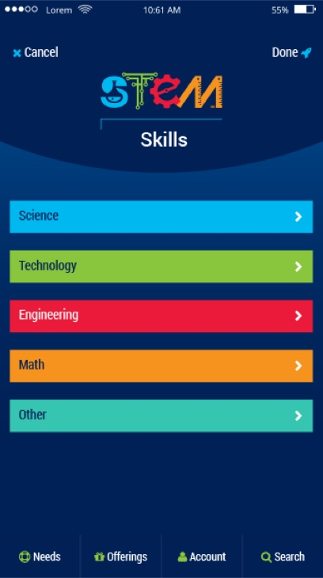

The STEM Partners Foundation was formed by the STEM Utah Industry Coalition with the support of the Utah Technology Council. It was created to support teachers in preparing a more vibrant STEM skilled workforce.

In 2014 the Coalition launched the Curiosity Unleashed media campaign to promote STEM education. This lead to the STEM Mentor Exchange mobile app, with the help of executives and engineers from Dell-EMC, Comcast, Adobe, Pluralsight, IM Flash and Boeing.
Today the STEM Partners Foundation is joined by many other companies, educational institutions and organizations in and outside of Utah, including: